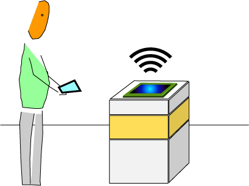

The design challenge of this project is to create an apparatus that brings together physical proximity, narrative, interactivity and physical space in such a way as to engage a discourse about ubiquitous computing and the production of space.
When you are within proximity of its network, you can connect to the Cache as if it were a typical WiFi access point, only this one is not the Internet. The Cache is a free floating 802.11 WiFi node purposely disconnected from the public Internet. You could not connect to the Cache through your Internet connection at home or work. You must be physically in the presence of the Cache in order to connect to it through its WiFi network.
|

|
Instead of accessing the Internet, you download to your WiFi-enabled device artist-created Macromedia Flash animations whose narratives respond to social and location-based activity occurring within range of the Cache's 802.11 network. Visitors to the Cache use their WiFi-enabled device (PDA, laptop, etc.) in order to download, view, and interact with digital art as if it were a wireless gallery.
The artist-made Macromedia Flash animations served by the Cache are programmed to alter their behaviors and appearance based on five criteria:
1. whether the object is in or out of range of the Cache
2. how many of the same kind of object are active in range of the node and have been downloaded to participants computers
3. how many of any kind of object is active in range of the node
4. how long has the object been out of the node
5. how long has the object been available on the node (i.e. what is its age?)
Artists may also specify limits as to the number of copies of a particular digital art object that may be downloaded to visitors WiFi devices.
more
|
|